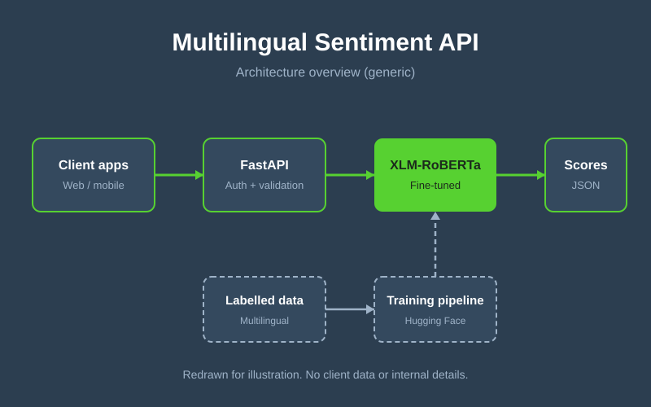

The problem
Survey feedback arrives from facilities in 49 countries and 27 languages. Initially, survey results were parsed manually: someone had to read each free-text response, judge its sentiment and categorize it by hand. That was slow, hard to keep consistent across reviewers and languages, and it did not scale as more facilities came online. Off-the-shelf English-only sentiment tools were not an option, as they failed on local languages and mixed-language text.
Approach
- Model choice: XLM-RoBERTa, a multilingual transformer, so one model covers many languages instead of one model per language.
- Fine-tuning: trained with Hugging Face on labelled multilingual feedback, with a held-out set per language to catch weak spots.
- Serving: self-hosted behind a FastAPI service.
- Integration: results feed the survey dashboard so teams can filter and triage by sentiment.
Architecture

Generic redraw for illustration. It contains no client data, hostnames or internal schema.
Results
Manual, reader-by-reader parsing of survey responses was replaced by automated, consistent sentiment scoring across all languages, so teams can triage feedback instead of reading every response.
| Language group | Baseline F1 | Fine-tuned F1 |
|---|---|---|
| English | 0.84 | 0.90 |
| French | 0.78 | 0.89 |
| Swahili | 0.62 | 0.85 |
| Low-resource languages | 0.55 | 0.79 |
Challenges & decisions
- Class imbalance: neutral feedback dominated, so I used weighted loss and evaluated on macro-F1 rather than accuracy.
- Mixed-language responses were kept in the training data instead of being filtered out.
- Batching kept inference fast enough for interactive dashboards.
What I'd do next
Add confidence thresholds with human review for low-confidence predictions, monitor drift per language, and extend the model to aspect-level sentiment.